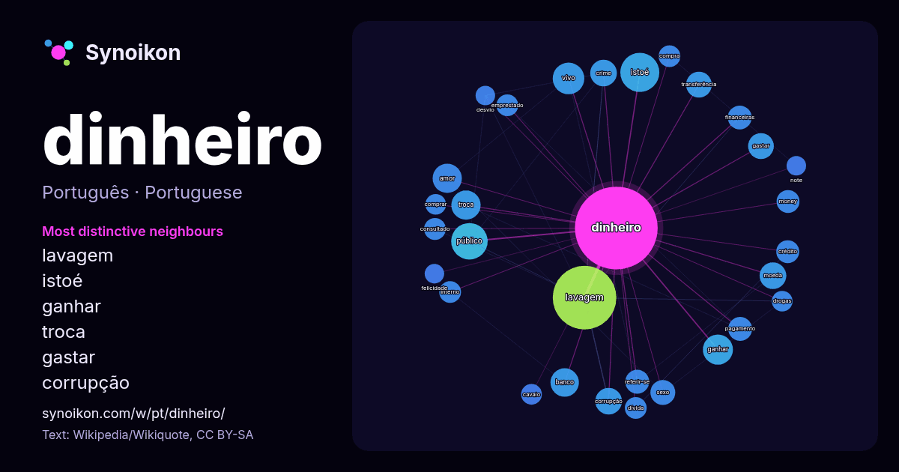

Português · palavra popular
dinheiro
“money” · As palavras encontradas ao seu redor em 1174 ocorrências da Wikipédia, Wikiquote.

Vizinhos mais característicos
- lavagem 83×
- istoé 33×
- ganhar 16×
- troca 15×
- gastar 15×
- corrupção 14×
- vivo 14×
- moeda 13×
- público 13×
- transferência 12×
- referir-se 12×
- amor 12×
- money 11×
- banco 11×
- crime 11×
- pagamento 11×
- consultado 11×
- financeiras 11×
- dívida 10×
- emprestado 10.0×
× = quantas vezes mais do que no texto geral da Wikipédia.
Vizinhos mais frequentes
- lavagem 85
- istoé 32
- público 28
- vivo 21
- brasil 20
- filme 19
- ganhar 19
- amor 18
- troca 18
- banco 17
- corrupção 15
- crime 15
- geralmente 15
- moeda 15
- mulheres 15
- gastar 14
- transferência 14
- vida 14
- sexo 13
- financeiras 12
Em contexto
- Nota: Para outros significados, veja Dinheiro (desambiguação). O dinheiro é, na sua aparência mais imediata, o meio usado na troca de bens, podendo fazê-lo Wikipedia snippets · Dinheiro
- lavagem de dinheiro pode ser dividido em três etapas distintas, no entanto, a lavagem de dinheiro é um processo único. As etapas da lavagem de dinheiro incluem: Wikipedia snippets · Lavagem de dinheiro
- Dinheiro antigo é "a riqueza herdada de famílias estabelecidas de classe alta (ou seja, nobreza, patriciado)" ou "uma pessoa, família ou linhagem que possui Wikipedia snippets · Dinheiro antigo
- destinatário. Produzir ou usar dinheiro falsificado é uma forma de fraude ou falsificação e é ilegal. O negócio de falsificação de dinheiro é quase tão antigo quanto Wikipedia snippets · Dinheiro falso
- Uma sociedade sem dinheiro descreve um estado econômico em que as transações financeiras não são conduzidas com dinheiro na forma de cédulas ou moedas Wikipedia snippets · Sociedade sem dinheiro
- Nota: Para outros significados, veja Dinheiro Vivo (desambiguação). Dinheiro Vivo é uma telenovela brasileira exibida pela Rede Tupi de 6 de agosto de Wikipedia snippets · Dinheiro Vivo
- (substantivo masculino) é um dos nomes pelo qual é referido coloquialmente o dinheiro no Rio Grande do Sul, Santa Catarina e no Paraná. É a alcunha da moeda Wikipedia snippets · Pila (dinheiro)
- O dinheiro foi a moeda de Portugal desde o final do século XII até o ano de 1433, quando foi inteiramente substituído pelo real por Duarte I. Doze dinheiros Wikipedia snippets · Dinheiro (moeda portuguesa)
Mais palavras
- arte
- ciência
- clima
- comida
- coração
- cão
- deus
- família
- força
- gato
- história
- língua
- morte
- natureza
- ouro
- ponte
- saúde
- trabalho
- trem
- verdade
- vida
- água
Pré-calculado em 2026-10-09 com as configurações padrão (±5 palavras, corpus médio). O mapa interativo pode atualizá-lo com dados ao vivo.
Interface traduzida automaticamente; correções são bem-vindas.